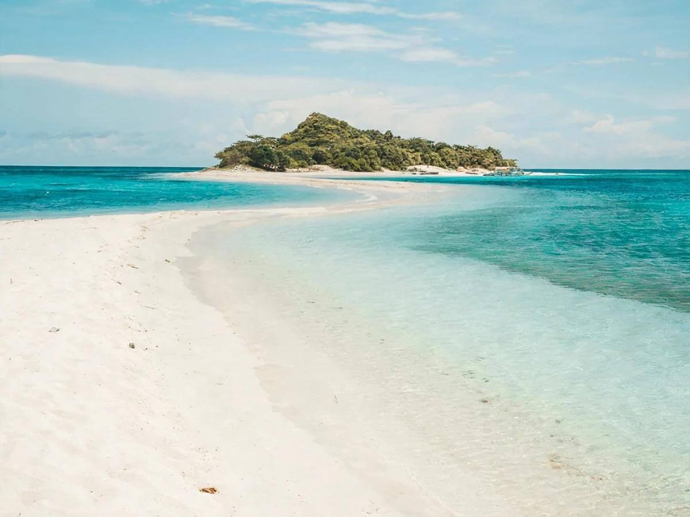

Cresta de Gallo is a small island off the southern shore of Sibuyan, in the Romblon town of San Fernando. What people come for is the sand: a long, pale strip that curves out from a wooded hump of land, with shallow turquoise water on both sides and the open Sibuyan Sea beyond. There is no resort, no restaurant and no regular ferry, which is exactly why it still feels empty.
Getting there is the part that takes planning. You first need to reach Sibuyan, which has no airport, then cross to the island on a hired outrigger from Azagra, a coastal barangay of San Fernando. Both legs depend on the sea, and the second one depends on it completely.
This guide walks through the routes to Sibuyan, how the boat hire works and what to ask before paying, what you can do on the island, where to sleep, a realistic budget and a three-day plan with room for bad weather.

Cresta de Gallo at a glance
- Where: off the south coast of Sibuyan Island, San Fernando, Romblon (MIMAROPA)
- Jump-off: Azagra, San Fernando
- Boat ride: about an hour on a hired outrigger when the sea is calm, longer when it isn't
- On the island: very few facilities; bring your own food and water
- Signal: patchy at best, sometimes none
- Plan for: at least one night in San Fernando before the crossing, plus a spare day
What You Are Actually Visiting
Think of Cresta de Gallo as a beach with an island attached rather than an island with a beach. Most of a visit happens on the sand spit, which changes shape with the tide, so the shoreline you walk in the morning can look different by mid-afternoon. The best views of its outline come from the boat on the way in, when the white strip stands out sharply against the deeper blue around it.
The island is not set up for visitors the way Boracay or even smaller resort beaches are. On some days you may find a caretaker or a few rentals, on others nothing at all. Go expecting to be self-sufficient and anything extra becomes a bonus.
How to Get to Sibuyan Island
Sibuyan is the most remote of Romblon's three main islands, and routes there change more often than most. Check the current sailing with the shipping line before you book anything that connects to it, and confirm which Sibuyan port your boat calls at.
Starting in Manila
Bus to Batangas, then ferry
Take a bus to Batangas Port and a ferry that serves Romblon. Some sailings stop at other Romblon ports first, so make sure yours continues to Sibuyan.
By air, partly
Fly to Tablas, then sail
When a flight to Tablas is running, you can fly in and connect by land and sea. Once you add the transfers and waits, it is often no faster.
Starting in the Visayas
Iloilo, Roxas City, then ferry
Fly to Iloilo, ride north to Roxas City in Capiz and look for a passenger boat to Sibuyan. Services do not run daily, so check dates early.
If you go through Capiz, a night in Roxas is no hardship, and the seafood food trip in Roxas City gives you something to do while you wait for your boat. Travellers already in Boracay or Caticlan can look for boats toward Tablas or another Romblon island, but expect at least two connections and do not assume it is a one-day trip. For a wider look at booking and choosing between operators, see the Philippines ferry travel guide.
From the port to San Fernando
Depending on your ferry, you may land at Magdiwang or another Sibuyan port. San Fernando is on the south side, roughly one to two hours away by road. Vans, jeepneys and tricycles tend to wait for ferry arrivals, but late landings can leave you with few choices, so ask your guesthouse to line up a ride if you are carrying a lot or arriving after dark.
The Boat Crossing from Azagra
From San Fernando town, a tricycle takes you down to Azagra, where the outriggers leave. Arrange the ride with your boat operator or host the day before, along with a meeting time and a phone number, rather than hoping to find both on the morning itself.
Boats are rented by the boat, not by the seat. Visitor reports put the price in the several-thousand-peso range, and the real figure depends on the size of the boat, fuel, how long you stay and what the operator includes. Treat any number you find online as a starting point and get a fresh quote. Before handing over money, settle these points:
- Round trip or one wayMake sure the quote covers the return, and whether the boat waits at the island or comes back for you at a set time.
- Capacity and life jacketsAsk how many the boat takes and check there is a jacket that fits every passenger, children included.
- Extra feesRegistration, environmental or docking fees may be charged separately. Ask now so they don't surprise you at the pier.
- The weather planAgree what happens if the sea turns rough: an earlier pickup, a postponed trip or a partial refund.
In good conditions the crossing takes about an hour. The boatman has the last word on whether it is safe to go, and that call should stand even if you have come a long way. Never get on an overloaded boat.
Things to Do on the Island
A day here is slow by design. Walk the sand end to end and watch how it shifts with the tide. Wear sandals or water shoes, since the sand gets very hot by late morning and there are coral and rocky patches along the edges.
Swimming is the main draw, but the island sits in open water, and currents near the tips of the sandbar can run strong. Ask the boatman which side is calm that day, stay near the shore and assume there is no lifeguard. On clear, quiet days, snorkelling around the reef edges can be good. Bring your own mask and fins, don't stand on coral, and leave shells and marine life where you found them.
Photographers get the most from wide shots taken from the boat, where the curve of the sandbar reads clearly. If you plan to fly a drone, ask the tourism office or your boatman whether any permission is needed, and keep it away from people and boats. For lunch, a packed meal eaten in the shade of the trees is the simplest plan. Nothing is sold on the island, so everything you bring comes back with you, rubbish included.
Can you camp overnight?
Some visitors have camped on Cresta de Gallo, and a sunset or sunrise on the sand is a tempting idea. Overnight stays still need the go-ahead from the San Fernando tourism office, and the rules and fees can change. Ask them directly, and ask about the camping area, toilets, waste, fires and the latest safe pickup time. If you get a yes, you will need your own tent, light, food and water for the night. Without one, plan a day trip and sleep on the main island.
Where to Stay
San Fernando is the natural base. It is where boats are arranged, it has small guesthouses and homestays, and it is where you buy water and food for the day out. Azagra is handy for an early start, and a homestay there may be able to sort out the boat and a packed lunch for you. Expect simple rooms, and ask about water supply, power and how you can pay before you book.
Magdiwang works if your ferry lands there late or you want to see the north of Sibuyan, but it adds a road transfer to the boat. For the rest of the island, including Mount Guiting-Guiting, and for Romblon town and its marble workshops, the Romblon and Sibuyan island guide covers the bigger picture.
What a Cresta de Gallo Trip Costs
Your route to Sibuyan decides most of the total. Once you are in San Fernando, the boat is the big shared cost, and it gets far easier to manage with four to six people splitting it. Use this as a checklist when asking for quotes.
Solo travellers and couples can sometimes share a boat with another group, but only arrange that through a proper local operator who confirms the numbers and the safety gear.
When to Go
The drier months, roughly March to May, usually give the best odds of a calm crossing and a full day on the sand. They are also hot, so shade and water matter more. The northeast monsoon and unsettled spells bring stronger wind and rougher water, and storms can turn up outside the usual rainy months too.
For this trip, the state of the sea counts for more than the calendar. A blue-sky forecast does not mean the water between Azagra and the island is safe. Check PAGASA's marine advisories, then ask your boatman the evening before and again in the morning.
A Three-Day Plan with a Buffer
- Day 1Land and get set up
Arrive at your Sibuyan port and transfer to San Fernando. Check in, confirm the boat for the next morning, check fees and sea conditions with the tourism office, and buy water, food and sunscreen.
- Day 2Cresta de Gallo
Early breakfast, tricycle to Azagra and register. Cross when the boatman gives the go-ahead, spend the day on the sand and in the water, and head back at the agreed time.
- Day 3Spare day or explore
If the sea kept you ashore on day two, try again now. If not, see more of Sibuyan or take a slow morning before the road back to your ferry.
Avoid putting the island trip on the same day as an onward ferry or flight. A late return or a cancelled crossing is enough to make you miss it.
What to Pack
- More water than you thinkThere is nowhere to refill on the island. Pack a reserve on top of what you expect to drink.
- Lunch and snacksin reusable containers, kept sealed against ants.
- Sun coverA hat, sunglasses, a rash guard and reef-friendly sunscreen.
- A dry bagfor your phone, cash and ID on the boat.
- Water shoeswith firm soles for hot sand and rocky edges.
- A small first-aid kitplus insect repellent and any medicine you take.
- A power bank and offline mapsSave your boatman's and host's numbers before you leave town.
- A rubbish bagEverything you carry over, food scraps and cigarette butts included, goes back with you.
Before you leave, tell your guesthouse which boat you are taking and when you expect to be back. With weak signal on the island, that simple step is your safety net. No beach fires unless local rules allow them and someone in charge shows you where.
Is the Trip Worth It?
If you like quiet beaches and don't mind a long journey with a few unknowns, yes. Cresta de Gallo pays back the effort with clear water and a stretch of sand you may share with only your boat crew. It suits travellers who can build in a spare day and let the sea set the schedule.
It is a poor fit if you want resort comforts, regular transport or a quick hop from another island on a tight timetable. Treat it as one part of a longer Sibuyan stay, stay in San Fernando, line up your boat early and pack as if there is nothing to buy on the other side, because there isn't.

Comments
No comments yet. Been here recently? Share a tip or ask a question.
Leave a Reply